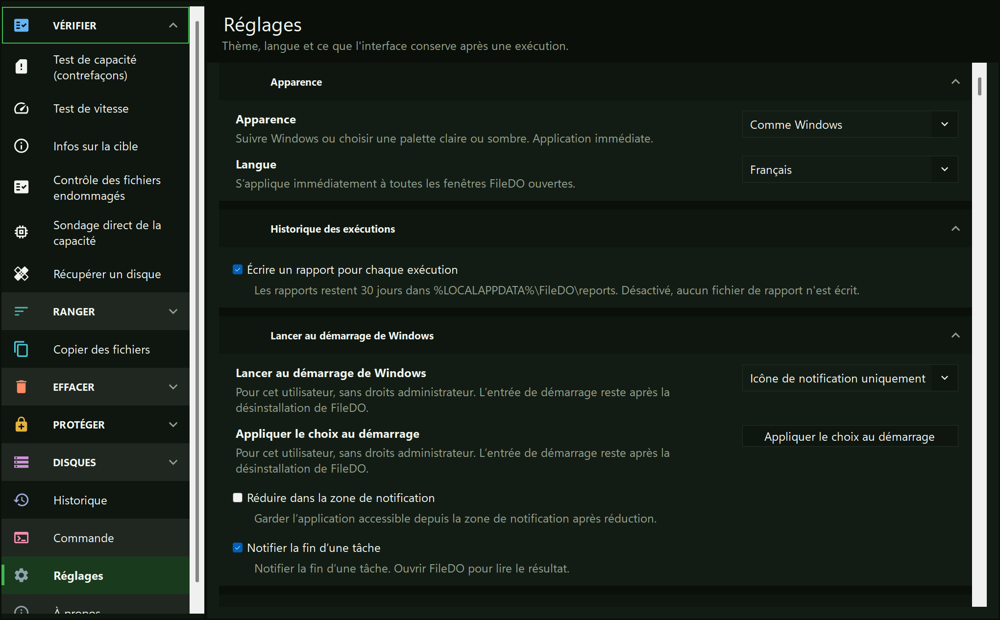
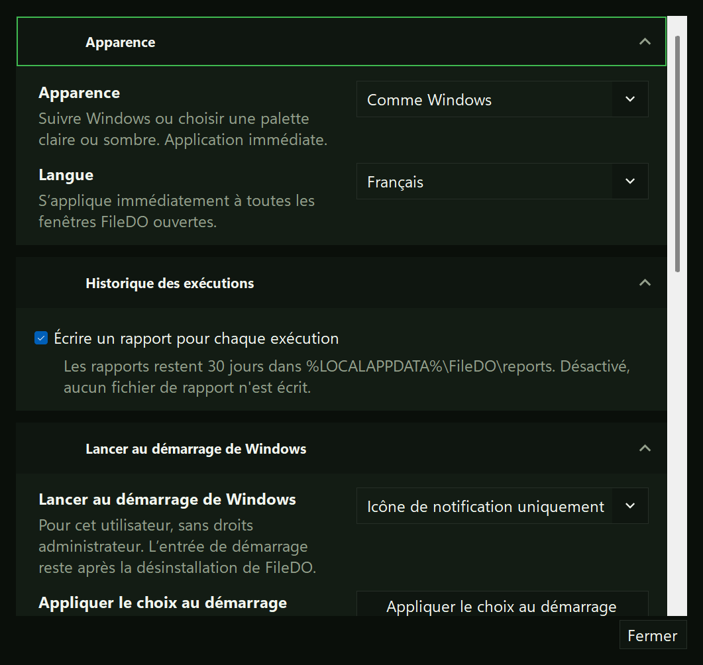
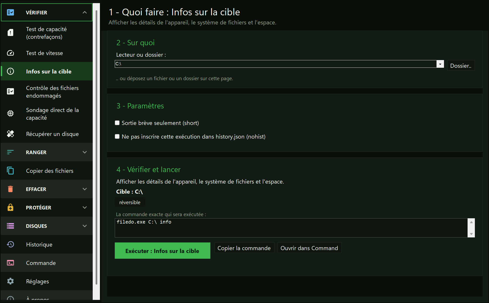
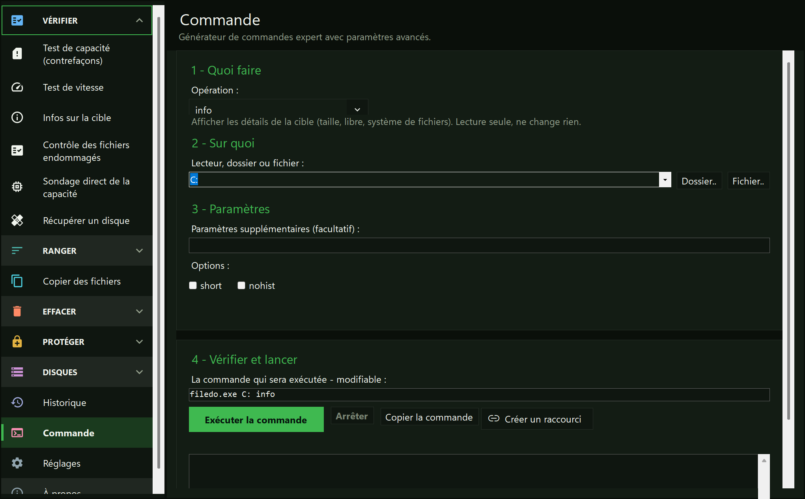

Vous préférez choisir une tâche
Choisissez la tâche dans le rail et remplissez sa page au lieu de saisir chaque argument.
Guide · FileDO GUI
FileDO GUI est la fenêtre Windows pour les mêmes commandes FileDO. Elle s’ouvre sur une interface : un rail de tâches sur le côté gauche et une page numérotée par tâche - quoi traiter, quels paramètres, puis vérifier et lancer. Elle ne change pas les règles de sécurité : elle rend visibles la cible, l’opération et la commande avant l’exécution.
Dans la fenêtre, F1 ouvre l’aide de la fenêtre où vous êtes ; la même aide se trouve sur ce site : aide de la fenêtre.
Les réglages sont disponibles dans la fenêtre principale et depuis le bouton Réglages du Gestionnaire de disques. Les changements de thème s’appliquent immédiatement ; ceux de langue à la réouverture. Choisissez le lancement à l’ouverture de session Windows : Désactivé, FileDO, Gestionnaire de disques ou icône de notification uniquement. Le démarrage ne demande pas de droits d’administrateur ; son entrée reste après la désinstallation. Dans la version du Store, utilisez Paramètres Windows, Applications - Démarrage, ou le Gestionnaire des tâches. Un lancement manuel affiche toujours une fenêtre. La réduction dans la zone de notification s’applique aux deux fenêtres ; un clic sur l’icône ouvre FileDO. Son menu ouvre le gestionnaire et les réglages, arrête une tâche, démonte tous les disques montés et quitte. Quitter pendant une tâche demande quoi faire. Les notifications de fin peuvent être désactivées ; la réinitialisation des positions de fenêtre s’applique à la prochaine ouverture.


Choisissez la tâche dans le rail et remplissez sa page au lieu de saisir chaque argument.
Chaque page commence par ce qu’il faut traiter et se termine par une vérification, de sorte que la cible reste sous vos yeux avant de lancer.
La page Commande affiche la ligne de commande : on peut la modifier, la copier ou la lancer.
La page À propos affiche la version, les liens et un bouton Envoyer les logs à l’auteur (dans l’ancienne fenêtre, le bouton À propos en haut à droite) : les logs sont regroupés dans un seul zip, le dossier s’ouvre avec lui sélectionné, le chemin va dans le presse-papiers, et votre messagerie s’ouvre avec l’adresse de l’auteur et un objet. Joindre l’archive et envoyer le message, c’est à vous de le faire - FileDO ne transmet rien lui-même.
filedo_win depuis le paquet winget/Store, ou filedo_win.exe à côté de filedo.exe dans le ZIP portable. L’interface s’ouvre avec le rail de tâches à gauche.

Le rail liste les tâches, et chaque tâche ouvre une page numérotée : quoi traiter, quels paramètres, puis vérifier et lancer. Il existe des pages pour un test de capacité, un test de vitesse, les infos sur la cible, un contrôle des fichiers endommagés, un sondage direct de la capacité, la récupération d’un disque, les fichiers en double, la comparaison de deux dossiers, le remplissage de l’espace libre, la copie de fichiers et l’effacement d’un dossier ; les pages Protéger, les pages Disques, l’Historique, les Réglages et À propos se trouvent à côté. Chaque option que la CLI accepte pour une tâche figure sur sa page.

Le constructeur expert : chaque opération que prend filedo.exe, avec les indicateurs et les sélecteurs de règles propres à celle que vous choisissez, et la ligne de commande elle-même modifiable en dessous. Lisez-la, modifiez-la à la main, copiez-la ou lancez-la.
Créer un raccourci enregistre cette ligne sur votre bureau. Double-cliquez dessus pour lancer la commande dans une console ; la case cochée par défaut garde la fenêtre ouverte pour que vous puissiez lire le résultat. Un raccourci stocke ses arguments, donc une ligne contenant un mot de passe p: ou pe:FILEDO_SHELL_CRED ne peut pas être enregistrée. Retirez cet argument et saisissez le mot de passe dans la console.
Les opérations qui exigent un mot de passe disposent ici de leur propre champ masqué, et secure le demande deux fois. Le mot de passe n’entre jamais dans la ligne de commande : la ligne ne contient que pe:FILEDO_SHELL_CRED, le nom de la variable qui le transmet à l’exécution. Un secure qui supprime ou écrase l’original exige aussi -y depuis cette page ; sans lui, l’original est conservé et l’exécution le signale.
Trois pages rendent un fichier secret, restituent l’original et ouvrent un fichier secret sans le décompresser. Le mot de passe est masqué et saisi deux fois lors de l’empaquetage ; un mot de passe vide est accepté et ne donne qu’un camouflage, sans aucun secret.
Ce qui arrive à l’original se choisit avant tout lancement : le conserver (par défaut), le supprimer, ou l’écraser puis le supprimer. Seul ce dernier choix vous demande de saisir WIPE. L’ouverture d’un conteneur démarre une exécution qui dure exactement aussi longtemps que la copie en clair existe ; le bouton Retirer la copie maintenant y met fin.
Le format, ce qu’il protège et ce qu’il ne protège pas, sont décrits dans le guide des fichiers secrets.
Dix-sept pages pour les disques virtuels .fdd : la liste de ce qui est monté, créer, monter, démonter, infos, vérifier, exporter une image et les autres opérations. Chaque page indique si le conteneur est camouflé ou chiffré avant tout lancement ; le mot de passe est masqué et n’atteint jamais une ligne de commande. Un disque monté reste monté à la fermeture de la fenêtre. La première ligne du groupe ouvre le Gestionnaire de disques, une seconde fenêtre qui liste tous les disques au même endroit. Le guide des disques virtuels.
L’interface graphique ne rend pas wipe, fill … del ni les modes de suppression réversibles. Vérifiez la cible et la commande avant de lancer ; sauvegardez avant les actions irréversibles. Sondage direct de la capacité et Récupérer un disque sont marqués comme destructeurs et demandent les droits d’administrateur ; Effacer un dossier exige toujours WIPE saisi en entier et -y coché, et envoie une racine de disque, un partage ou TEMP vers la console.
Un double-clic sur un fichier .fd-sec ouvre la fenêtre sur ce conteneur. Depuis une ligne de commande, c’est la même chose avec filedo_win.exe C:\a\secret.fd-sec. Chaque conteneur a sa propre fenêtre.
La fenêtre écrit toujours ses erreurs dans %LOCALAPPDATA%\FileDO\filedo_win.session-*.log - ce fichier entre dans le zip que crée le bouton Envoyer les logs à l’auteur. L’option -debug y ajoute des lignes détaillées.